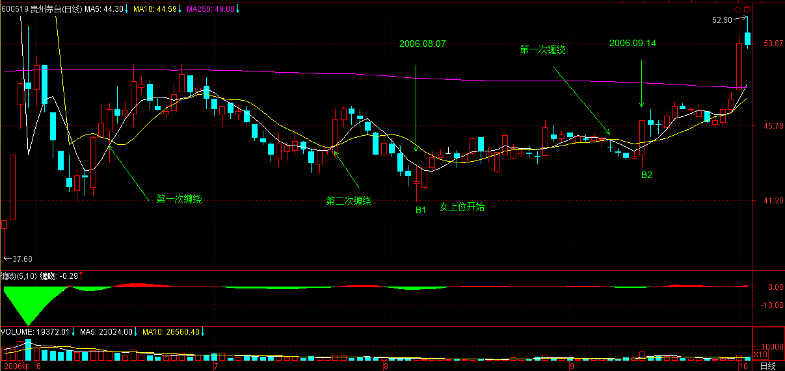
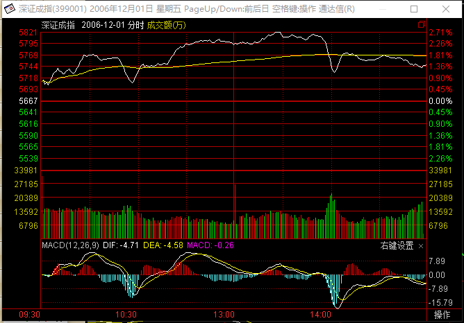

(2006-12-01 12:03:48)
就算是看AV，最终也是为了实战。上章说了那么多关于“吻”的知识，目的是为了干而不看，光看不干，那不成了阴九幽？AV看多了而不实践，绝对有损健康。【韶山映山红】古龙《绝代双骄》十大恶人之半人半鬼阴九幽。自命轻功天下无双，从来不肯与人正面对敌，游魂般在暗中下毒手。从不喝酒，不能人道，只能以绝顶轻功偷窥别人行房为乐。 这里说的看，是指理论学习。】
但干，马上要遇到的就是风险问题。【韶山映山红】安全第一。对市场永远要有一颗敬畏之心。】任何一个位置介入，都存在风险，而且除非行情走出来了，【韶山映山红】行情走出来了，就不存在风险啦？★可以做个专题，以后研究。】否则即使最简单的均线系统，也没人能事先百分百地确认究竟采取怎样的方式去“吻”。【韶山映山红】没人能事先百分百地确认走势。】
熟悉本ID所解《论语》的都知道，风险是“不患”的，是无位次的，任何妄求在投资中的绝对无风险，都是痴心妄想。唯一的办法，就是设置一个系统，使得无位次、“不患”的风险在该系统中成为有位次，“患”的系统，这是长期战胜市场的唯一方法。【韶山映山红】真正的风险不是不可测，而是没有能力应对。不是消灭风险，而是准备好完善的应对措施，这是长期战胜市场的唯一方法。】
必须根本自己的实际情况，例如资金、操作水平等等，设置一套分类评价系统，然后根据该系统，对所有可能的情况都设置一套相应的应对程序，这样，一切的风险都以一种可操作的方式被操作了。而操作者唯一要干的事情，就是一旦出现相应的情况，采取相应的操作。【韶山映山红】技术指标都属于分类评价系统，都可以作为基础搭建应对程序，成为某种操作系统。】
【韶山映山红】１，分类评价系统。２，相应的应对程序。３，采取相应的操作。】
对于股票来说，实际的操作无非三种：买、卖、持有。当然，在实际中，还有一个量的问题，这和资金管理有关，暂且不考虑。那么，任何投资操作，都演化成这样一个简单的数学问题：N种完全分类的风险情况，对应三种（买、卖、持有）操作的选择。【韶山映山红】一套分类评价系统，划分出N种完全分类的风险情况，根据相应的应对程序，对应三种（买、卖、持有）操作的选择。】
例如，对于一个简单的，由5日均线与10日均线构成的买卖系统，【韶山映山红】MA5和MA10，如果再加入K线是否与均线交叉，就是加上MA1。】
首先，两者的体位构成一个完全分类，女上位是牛，男上位是熊，【韶山映山红】体位的完全分类，不是走势的完全分类。上一课说“男上位”意味着空头市场，而“女上位”意味着多头市场，这里说女上位是牛，男上位是熊，都是缠论进化过程中的远古时代的趋势概念。】
还有一种是互相缠绕的情况，这种情况最终都要演化成女上位或男上位，只有两种性质：中继或转折。【韶山映山红】缠绕和体位是并列关系，所以互相缠绕没有体位之分，只有中继或转折两种性质，最终都要演化成某种体位，所以是缠论进化过程中的远古时代的中枢震荡盘整的概念。】
相应，一个最简单的操作系统就此产生，就是在体位互相缠绕完成后介入，【韶山映山红】体位＋缠绕，缠绕完成之后介入。】对于多头来说，这样一个系统无非面临两个结果，变为女上位成功，变为男上位失败。【韶山映山红】确认中枢震荡盘整完成，后面的走势就是上涨趋势或下跌趋势。】由于缠绕若是中继就延续原体位，若转折就改变体位，因此对多头来说，值得介入的只有两种情况：男上位转折，女上位中继，空头反之。【韶山映山红】多头值得介入的两种情况：下跌＋盘整＋上涨，上涨＋盘整＋上涨。】
对于任种走势，首要判断的是体位：男上位还是女上位。【韶山映山红】先区分是趋势还是中枢震荡盘整，然后判断是上涨趋势还是下跌趋势。】这问题只要有眼睛的都能判断出来，对于5日、10日的均线系统来说，5日在上就是女上位，反之就是男上位，这在任何情况下都是明确的。【韶山映山红】这里说“只要有眼睛的都能判断出来”，不是判断趋势和盘整，而是判断上涨还是下跌。】如果是女上位的情况，一旦出现缠绕，唯一需要应付的就是这缠绕究竟是中继还是转折。【韶山映山红】在缠绕的当下确定是中继还是转折。】可以肯定地说，没有任何方法可以百分百确定该问题，但还是有很多方法使得判断的准确率足够高。【韶山映山红】没有任何方法可以百分百，即使是缠论的技术分析，也有神出鬼没的小转大。均线系统这样不能数字化的系统，更加是只能做概率判断。】
例如，女上位趋势出现的第一次缠绕是中继的可能性极大，【韶山映山红】划重点：可能性。如果女上位的第一次缠绕不是中继，那“第一次缠绕”就成了转折，所以下面又提出了若干条辅助辨别的方法。 既然是“女上位趋势”，什么情况下，第一次缠绕就不是中继呢？女上位趋势被小转大破坏。】如果是第三、四次出现，这个缠绕是转折的可能性就会加大；【韶山映山红】即使是中继，也不会永远，堆得越高，越接近坍塌。如果是中枢构成的趋势，第二个中枢之后转折的概率就已经加大了。】
还有，出现第一次缠绕前，5日线的走势必须是十分有力的，不能是疲软的玩意，【韶山映山红】又是一个只能凭感觉凭经验、不能数字化的描述，什么样的算是“十分有力”？可以理解为一开始就能够断定没有abc盘整背驰的可能。如果“第一次缠绕前”是趋势的启动，就要迅速脱离成本区，同时吸引跟风盘，所以开始要猛。】这样缠绕极大可能是中继，其后至少会有一次上升的过程出现；【韶山映山红】因为没有abc盘整背驰，所以后面只有没有小转大，就“至少会有一次上升的过程出现”。】
第三，缠绕出现前的成交量不能放得过大，【韶山映山红】成交量是监视资金动向的一个重要指标，可以作为动力判断的依据，缠论的形态学不考虑成交量的问题。】一旦过大，骗线出现的几率就会大大增加，【韶山映山红】成交量大意味着资金可能借机走了，从而使得“第一次缠绕”成为转折而不是中继。或者是证明拉升费力，还不到做趋势的时机，还会继续震荡，从而形成事实上的假上涨趋势的骗线。】如果量突然放太大而又萎缩过快，一般即使没有骗线，缠绕的时间也会增加，【韶山映山红】“成交量突然放太大而又萎缩过快＂，要么是大资金已经在大成交量的时候走了，只有跟风盘的萎缩量的维系，成为骗线；要么是拉升费劲、不能吸引跟风盘资金的加入，只好暂停拉升，继续折腾去等待时机。】而且成交量也会现在两次收缩的情况。【韶山映山红】成交量两次收缩是什么形态？什么原因？以后研究。】
女上位选择第一次出现缠绕的中继情况，【韶山映山红】选择这种情况介入。搭顺风车。】而男上位的就相反，要寻找最后一次缠绕的转折情况，【韶山映山红】关键是正确的判断。】其后如果出现急跌却背弛，那是最佳的买入时机。【韶山映山红】急跌是形态学，背驰是动力学。】抄底不是不可以，但只能选择这种情况。【韶山映山红】只有这种情况才是底。】
然而，没有人百分百确认那是最后一次缠绕，【韶山映山红】即使背驰判断无误，也还有小转大的威胁。】一般，男上位后的第一次缠绕肯定不是，【韶山映山红】反过来说，如果第一次缠绕是最后一次，那就不是下跌趋势，而是更大级别的盘整了。】从第二次开始都有可能，【韶山映山红】缠师说：“‘第一次缠绕不是’是针对趋势中寻找背驰来说的，因为如果是趋势，一定会有两次以上的缠绕，而没有趋势没有背驰。”2006-12-11 12:16】如何判断，最有力的就是利用好背弛制造的空头陷阱。【韶山映山红】“背弛制造的空头陷阱”就是趋势背驰的情况，如果没有，就是盘整背驰结束趋势，判断就困难了。】关于如何利用背弛，是一个专门的话题，以后会详细论述。【韶山映山红】利用趋势背驰，操作级别的盘整背驰只能做次级别的操作。】
综合上述，利用均线构成的买卖系统，首先要利用男上位最后一次缠绕后背弛构成的空头陷阱抄底进入，这是第一个值得买入的位置，【韶山映山红】这里是第一次提出一买的概念：“男上位最后一次缠绕后背弛构成的空头陷阱”。这里的背驰是趋势背驰。】
而第二个值得买入或加码的位置，就是女上位后第一次缠绕形成的低位。【韶山映山红】这里是第一次提出二买的概念：“女上位后第一次缠绕形成的低位”。熊转牛后的第一个次级别回踩。】
站在该系统下，这两个买点的风险是最小的，准确地说，收益和风险之比是最大的，也是唯一值得买入的两个点。【韶山映山红】按照均线系统的技术分析，这两个买点最好。也就是说，还有其他的买点，只是不如这两个好。或者说，这两个才是“唯一值得买入的两个点”，别的那些都是外面那些妖艳的贱货。那么，谁是外面那些妖艳的贱货？均线系统没有中枢，也就没有三买。但是女上位的每一个回踩都是可以操作的买点，这些买点就是外面那些妖艳的贱货，随着上涨的走势而越来越动人心魄，也暗藏着杀机。】
【韶山映山红】这里是缠师第一次正式的提出一买、二买的概念。中枢系统沿用了均线系统的基本概念。】
但必须指出的，并不是说这两个买点一定没有风险，其风险在于：对于第一个买点，把中继判断为转折，把背弛判断错了；【韶山映山红】系统风险是小转大扭曲了走势。可能是学艺不精的判断失误。】对于第二个买点，把转折判断成中继。【韶山映山红】下跌趋势背驰，被一个同级别盘整向上就化解了。】这些都构成其风险，但这里的风险很大程度和操作的熟练度有关，对于高手来说，判断的准确率要高多了，【韶山映山红】各种背驰的正确判断，是缠论运用的基础。】而如何成为高手，关键一点还是要多干、看参与，形成一种直觉。【韶山映山红】技术最终都成为艺术。】
但无论高手还是低手，买点的原则是不变的，【韶山映山红】面对一切走势，缠论一共只有三类买卖点，以不变应万变。】唯一能高低的地方只是这个中继和转折以及背弛的判断。【韶山映山红】高手、低手与理论无关，与学艺和运用有关。】
【韶山映山红】从本质上说，本级别的中继和转折的判断问题，就是次级别的背驰判断的问题。 】
明白了这一点，任何不在这两个买点买入的行为都是不可以原谅的，因为这是原则的错误，而不是高低的区别，如果你选择了这个买卖系统，就一定要按照这个原则了。【韶山映山红】均线系统只有一买和二买。】
买的方式明白了，卖就反过来就可以了，这是十分简单的。【韶山映山红】一买难度大，可以优选二买。一卖最好，二卖可以救命。】
一吻而消魂，学会这消魂之吻，就能在动荡的市场中找到一个坚实的基础。【韶山映山红】即使有各种优缺点，均线系统依然是“一个坚实的基础”。】
当然，相应的均线的参数可以根本资金量等情况给予调节，资金量越大，参数也相应越大，这要自己去好好摸索了。【韶山映山红】均线系统没有递归的性质，也就没有缠论所谓的级别，所以调节的是“均线的参数”。】这点，对于短线依然有效，只是把日线改为分钟线就可以了。【韶山映山红】参数的调整会带来畸变，所以可能需要更换不同周期的K线。】
而一旦买入，就一直持有等待第一个卖点，也就是女上位缠绕后出现背弛以及第二个卖点也就是变成男上位的第一个缠绕高点把东西卖了，这样就完成一个完整的操作。【韶山映山红】这里是缠师第一次正式的提出一卖、二卖的概念，和一买、二买是对应的。中枢系统沿用了均线系统的基本原理。】
注意，买的时候一般最好在第二个买点，而卖尽量在第一个卖点，这是买和卖不同的地方。【韶山映山红】二买最好，是针对初学者的操作而言的最好，不是理论的最好。缠师原文也说过：“如果你已经对背弛很熟悉，最好当然是第一类买点。第二类买点对不熟悉的人好一点，至少可以避免判断错背弛在下跌中买股票的风险。”】
补充一个例子让不习惯抽象的人能理解：
对于喜欢用日线的，用茅台为例子给一个分析，5日和10日。【韶山映山红】600519贵州茅台。2006.05.19的10派3.00元，10送10股。2006.05.25的10派20.66元，10送1.2股。不复权，巨大缺口形成男上位。】

8月7日，男上位的第二次缠绕后下跌，但成交量等都明显出现背弛，构成小的空头陷阱，成为第一个买点在41元附近。【韶山映山红】以5分钟图为最小级别做线段中枢的走势划分，这个买点因为没有创新低，连abc盘整背驰都不够条件。】
【韶山映山红】以1分钟图为最小级别做线段中枢的走势划分，这个一买只有很小级别的背驰。】
9月14日，女上位的第一次缠绕下跌形成第二个买点在44元附近。【韶山映山红】以1分钟图为最小级别做线段中枢的走势划分。这个二买是中枢回踩结束点。后面还有一个三买。】
然后基本就沿着10日线一直上涨，即使是短线，10日线不有效跌破就继续持有等待第一个卖点，也就是缠绕后出现背弛的出现。第二个卖点就是变成男上位的第一个缠绕的高点，目前这一切都没出现，所以就持有等待出现。
【韶山映山红】这段是博客文章发表之后，又修改添加的，补充于2006-12-1 12:41。】
再补充一句：
希望来这里的人，以后慢慢少点诸如要涨多少要跌多少之类的问题，因为这类问题都是错误的思维下产生的。本ID不是股评，不是算命先生，才没兴趣猜测上升、下跌的空间，本ID只是一个观察者，只在买点出现时介入，然后持有等待卖点的出现，其他本ID一律没兴趣。
来这里，如果最终不能脱胎换骨，在投资上换一副眼睛，那你就白来了。
【韶山映山红】最后这段是博客文章发表之后，又修改添加的，补充于2006-12-1 12:55。】
【韶山映山红】南无月光如来注：
这里开始用均线系统来解释第一、第二类买卖点，方便与以后缠论的买卖点的判断方法作比较。缠师由理念到实用技巧，由简单的买卖系统将过渡到完美的缠论体系。
1、对于由5日均线与10日均线构成的买卖系统，分为三类情况：A：5日均线在10日均线之上，且同步向上发散，属上涨走势；B：5日均线在10日均线之下，且同步向下发散，属下跌走势；C：还有一种是互相缠绕的情况，这种情况最终都要演化成上涨走势或下跌走势，只有两种可能：中继或转折。相应，一个最简单的操作系统就此产生，就是在体位互相缠绕完成后介入，由于缠绕若是中继就延续原来走势，若转折就改变原来走势，因此对多头来说，值得介入的只有两种情况：下跌走势后通过缠绕转折，上涨走势中继，空头反之(对于股票的空头当然是绝对回避，对于期货则可以开空仓的)。
2、 对于A的情况，一旦出现缠绕，唯一需要应付的就是这缠绕究竟是中继还是转折。可以肯定地说，没有任何方法可以百分百确定该问题，可以从以下几点判断：其一：上涨趋势出现的第一次缠绕是中继的可能性极大，如果是第三、四次出现，这个缠绕是转折的可能性就会加大；其二：出现第一次缠绕前，5日线的走势必须是十分有力的，不能是疲软的玩意，这样缠绕极大可能是中继，其后至少会有一次上升的过程出现；其三，缠绕出现前的成交量不能放得过大，一旦过大，骗线出现的几率就会大大增加，如果量突然放太大而又萎缩过快，一般即使没有骗线，缠绕的时间也会增加，而且成交量也会现在两次收缩的情况。通过以上几情况的判断来决定是平仓还是持有。
3、对于B的情况，就是寻找抄底的买入时机，抄底只能选择这种情况。然而，没有人百分百确认那是最后一次缠绕，一般，男上位后的第一次缠绕肯定不是，从第二次开始都有可能，如何判断，最有力的就是利用好背弛制造的空头陷阱。
4、利用均线构成的买卖系统，首先要利用B类最后一次缠绕后背弛构成的空头陷阱抄底进入，这是第一个值得买入的位置，而第二个值得买入或加码的位置，就是由B类转换成A类后第一次缠绕形成的低位。这两个买点的风险是最小的，也是唯一值得买入的两个点。
5、任何不在这两个买点买入的行为都是不可以原谅的，因为这是原则的错误，而不是高低的区别的。一旦买入，就一直持有等待第一个卖点，也就是上涨末期缠绕后出现背弛以及第二个卖点。
6、买的时候一般最好在第二个买点，而卖尽量在第一个卖点，这是买和卖不同的地方。
http://blog.sina.com.cn/s/blog_60c36c130100i1lv.html 】
这个对下午判断继续有效
缠中说禅 2006-12-01 09:13:03
大盘今天出现震荡是正常的，关键是5日线。只要5日线站稳，板块会继续轮动表现的
2006-12-1 12:09
本ID对大盘的建议继续有效，引用如下：
该结论继续有效
缠中说禅 2006-11-29 15:14:38
从大盘健康的角度说，本ID给大盘的建议是：先深成指突破6103点的历史高位，然后上海跟上，突破以后再调整，这样更健康。不知道大盘有没有兴趣听本ID的意见了。
2006-12-1 12:10
现在大盘最大的风险是上海人比较小气，因为深圳先突破历史新高几乎是不可改变的了。上海有可能故意捣乱，让大家都突破不了。这种事情听起来像天方夜谈，但历史上出现过不止一次了。但历史却一次次地证明，只要是大牛市，深圳就是比上海牛，这也是判断行情的一个很重要的经验。当深圳比上海弱时，是大行情的机会很小的。现在看到深圳比上海强，即使是上海人，也应该为此高兴。
2006-12-1 12:16
[匿名] 糊涂蛋 2006-12-01 12:09:07
沙发？请教000958能介入吗？ 【韶山映山红】000958东方热电，2014.10.15变更为东方能源。】
===========
学好上面一招，就要自己先分析一下，你看看用5日、10日，这股的最佳和第二买点在哪里？
2006-12-1 12:18
好的，就用刚才糊涂蛋 所的000958分析一下。【韶山映山红】000958东方热电，2014.10.15变更为东方能源。】
随便就用5、10的系统，先看周线，如果资金大的，可以先看月线。
周线上，5周10周的第一个买点出现在7月22日的2.2元附近，有一个典型的背弛，具体自己去研究。【韶山映山红】“7月22日的2.2元附近”很显然是2005年的7月22日。】
第二个买点就是11月3日的2.6元附近，那是女上位后出现的第一次缠绕。【韶山映山红】“11月3日的2.6元附近”应该是2006年11月3日，而不是前面2005.11.04那周，虽然2005.11.04那周更像是二买。一方面代表周线位置的周五的日期不吻合，另一方面2.6的价格也不吻合。在缠论的“男上位女上位”时代，什么时候算是缠绕，什么时候算是体位也就是趋势的变化，并没有一个明确的说法，尤其是当下做判断的时候。】
【韶山映山红】】

现在不是不可以买，只是最好的位置过去了。中线给股票没问题，短线可以参照日线的该种方法操作。
2006-12-1 12:26
各位注意
本ID告诉你的是最佳买点如何判断，并不是说除了这两个点就不能买，但那要承受更大的风险，而要长期成功，就要尽量学会把风险控制到最低。
还有，这只是一招，绝不能光靠这一招，但如果连一招都学不会，后面那些招怎么学？
2006-12-1 12:30
[匿名] 7NT开叫 2006-12-01 12:23:47
楼主既牛又菩萨心肠,谢谢了,什么时候楼主有空时请楼主写一篇关于资金管理的文章,谢谢!
============
按部就班，会写到的。
2006-12-1 12:33
对于喜欢用日线的，用茅台为例子给一个分析，5日和10日。
8月7日，男上位的第二次缠绕后下跌，但成交量等都明显出现背弛，构成小的空头陷阱，成为第一个买点在41元附近。
9月14日，女上位的第一次缠绕下跌形成第二个买点在44元附近。
然后基本就沿着10日线一直上涨，即使是短线，10日线不有效跌破就继续持有等待第一个卖点，也就是缠绕后出现背弛的出现。第二个卖点就是变成男上位的第一个缠绕的高点。
2006-12-1 12:41
[匿名] 糊涂蛋 2006-12-01 12:44:59
非常感谢数女在百忙之中天天按时教我们吻、缠绕、介入、体位、G点，现有三个疑问请数女解答：
1、如果招数所有人都学会了，市场会变成怎样呢？（也许糊涂蛋从来都不缺乏）。
2、你天天按时授课是抱着怎样的目的？
3、我们该怎样感谢你呢？
==============
首先不会所有人都学会，其次，市场最后比的不是技术，而是心态，这永远不可能统一，高手永远是高手，低手，如果不经过磨练，学多少技术也白搭。
你的第二个问题很无聊，干事情为什么都要目的，事情本身不可以就是目的？
至于感谢，说一句狠话，世界上有谁有能力感谢本ID的？本ID什么都不缺，谁又有资格感谢本ID？
2006-12-1 12:50
[匿名] 7NT开叫 2006-12-01 12:47:35
非常论同楼主的安全原则和均线操作法,楼主所讲绝对是真经,非常实用,谢谢!
===========
那只是一个指南，路必须自己走，多看点AV，也就是各种股票的走势图，好好分析，要心里完全明了，化为自己的直觉，这才有点用处。
2006-12-1 12:52
[匿名] 无言 2006-12-01 12:51:26
你好,今天买入600809,后市空间有多大,谢谢
==========
希望来这里的人，以后慢慢少点问这类的问题，因为这类问题都是错误的思维下产生的。
本ID不是股评，不是算命先生，才没兴趣猜测上升、下跌的空间，本ID只是一个观察者，只在买点出现时介入，然后持有等待卖点的出现，其他本ID一律没兴趣。
来这里，如果最终不能脱胎换骨，在投资上换一副眼睛，那你就白来了。
2006-12-1 12:55
文章最后补充了几句话，各位可以再看看。
开盘了，先下。再见。
2006-12-1 12:58
大盘今天如期出现震荡，


目前大盘最大的危险就是前面所说的沪深之间的竞争，特别上海历史上有故意拆台的前科，这一点必须有所警惕。

技术上，今天深圳成指留下的缺口十分重要，如果很快回补，则技术上发出不好的信号。【韶山映山红】为什么“很快回补”反而不好？以后研究。】
下周一依然有震荡的需要，但各股行情依然继续。由于11月是巨阳，12月上冲后出现大幅震荡不可避免，这必须要清醒。
2006-12-1 15:02
[匿名] liang 2006-12-1 14:38
很佩服“本ID”对股票行情的洞察力。但对于股票，只靠K线图分析是不够的，还有很多其他的因素。
中国股市现在受到国外投资家的热捧，所以才会出现大牛市，线图技术分析也很适用，就像去年的日本股市一样。但一旦那些投资家套现走人，中国的股市将会立即垮掉，纵然线图技术分析再强也没用。这点相信“本ID”很明白，但多半股民都不太明白。
所以我希望“本ID”今后“说禅”的时候能够抛开单独的线图技术分析，多考虑一些诸如国际形势，外资动向，原油价格之类的环境因素，而不是单纯的“喜欢数学的女孩”。当然说到底这只是一个建议，本男猿人并不期望太多。呵呵！！
============
把基本面当上帝和把技术当上帝一样可笑。
2006-12-1 15:03
马上有应酬，要走了，先下，再见。
2006-12-1 15:04
(2006-12-02 11:53:00)
今夜
继续用
大提琴
勾引你
勾引，无须语言，今夜，让器官作主。
a小调第一大提琴协奏曲
法兰西
印象迷离
淡得抹不去的岁月
风在动
D大调第五大提琴奏鸣曲
心犹壮
身已老
e小调大提琴协奏曲
撕心裂肺的天空
残阳破碎
大西洋无边的泪水
夜将临
请关闭其他所有背景音乐
（待续）
严禁抄袭，违者必究
周末，休息、练习如何去吻都可以，就别股票了！
2006-12-2 12:00
各位好好欣赏，先下，再见。
2006-12-2 12:05
[匿名] 摄影之友 2006-12-02 12:04:47
缠中说禅:由衷的,发自内心的感谢,代表着一份最真切的情感.情感无价！那么请你接受我们的感谢吧.多谢你,好女孩!
==========
谢谢，开饭了，先下，再见。
2006-12-2 12:06
[匿名] 在多嘴一句 2006-12-02 12:07:02
什么时候给我们听你24岁的作品啊？
==============
现在抄袭太多，特别音乐，太多了，好东西不能随便拿上来。但一些习作性质就无所谓了，连这都抄袭的人也太没出息了。
迟点弄一首本ID写的第一首无调性作品，这个是在准备上大学的那个暑假写的，比前面的都要晚点。
2006-12-2 16:55
本ID建立了一个圈子，但不是为了本ID，只是方便来这里的人互相交流，把自己好的文章放到一个地方方便借鉴。点击本ID博客首页左侧的“我的圈子”就能找到。没有设置任何门槛，任何人都可以加入，然后就可以把自己的文章放到上面了，有兴趣的可以看一下。
只要是新浪允许的文章都可以放上去，本ID不会管也没时间管。
2006-12-2 16:59
(2006-12-03 10:50:01)
子曰：由知、德者，鲜矣！
杨伯峻：孔子对子路道：“由！懂得德的人可少啦。”
钱穆：先生说：“由呀！对于德，知道的人太少了。”
李泽厚：孔子说：“子路，懂德行的人，很少了。”
详解：上面解释，都根据如下断句：“由！知德者鲜矣”，相应的是“我本位”与“鲁模式”杂交而来的荒谬逻辑。首先，“德”被当成一种可以被少数所谓“有德”精英玩弄的玩意，一旦有人宣称拥有这玩意，就如同太监拥有了假阴茎一般生机勃勃了。当然，拥有这所谓“德”之假阴茎的所谓精英，从来都是各色各样“我”的竞争，最终不过是所谓话语权的争夺，让“我”之“我”成为最终“德”的标准，让“我”之假阴茎最终成为挥舞在所有人头上的棍子，而其前提是，所有人，男者阉割成太监，女者为奴为婢。然后，无论男女，都在这所谓“德”的假阴茎棍子的挥舞下大一统了。“鲜”，被这群假阴茎贩卖者定义成了上声，成了“少、太少、很少”，其潜台词不过是只有符合他们所谓“德”的才是多，才是对，才是“君子”，才是精英。这种混帐逻辑，将《论语》阉割成一本假阴茎安装手册，两千年多奴役所有人的思想，最终成就了假阴茎贩卖者的无耻勾当。
正确断句应该是：“由知、德者，鲜矣！”这里，“由”并不是上面三人和通常所认为的是指孔子学生“子路”，而是“蹈行、践履”的意思，这种用法很常见，如《礼记》“是故隆礼由礼，谓之有方之士”；“知”，“智”的本字，智慧的意思；“德”，行“圣人之道”所得；“鲜”，平声，新鲜、鲜活的意思。“圣人之道”，就是将“人不知”的世界变为“人不愠”世界的道路，这里没有任何固定的模式和先验的走法，路是人走出来的，是人所“由”而来，是人所“蹈行，践履”而来。没有人的“蹈行，践履”，何来路？除了“知、德”，行“圣人之道”的君子无所“蹈行，践履”也无须“蹈行，践履”。
把“人不知”的世界变为“人不愠”的世界，“圣人之道”是无位次的，而“德”因此而有了位次，因此而有所得，该所得就是“德”。而正因为“圣人之道”不是先验的，而是立足于现实之中，因此永远都是新鲜、鲜活的。何谓“鲜”？日日是好日，时时是花时，永远处在一个创新、创造之中，所谓“天行健，君子自强不息”也。对于“圣人之道”来说，“知”是基础，正如上章所说“不知，命无以为君子也”，没有智慧，不可能承担君子的使命；而君子的使命是什么？就是“闻、见、学、行”“圣人之道”，把“人不知”的世界变为“人不愠”的世界。而“闻、见、学、行”“圣人之道”，不是一个遥远的神话，而是要落实在现实的每个当下，因此而位次，因此而有所“德”。保持其新鲜、其活力，当下活泼泼地呈现，是“闻、见、学、行”“圣人之道”的生命力所在。
缠中说禅白话直译
子曰：由知、德者，鲜矣！
孔子说：蹈行、践履“闻、见、学、行”“圣人之道”智慧、所得的君子，永远处在创新、创造之中啊。
（待续）
严禁抄袭，违者必究
本ID建立了一个圈子，但不是为了本ID，只是方便来这里的人互相交流，把自己好的文章放到一个地方方便借鉴。点击本ID博客首页左侧的“我的圈子”就能找到。没有设置任何门槛，任何人都可以加入，然后就可以把自己的文章放到上面了，有兴趣的可以看一下。
只要是新浪允许的文章都可以放上去，本ID不会管也没时间管。
2006-12-3 10:58
中午有事情，先下了。
2006-12-3 11:06
本课目录
教你炒股票12：一吻何能消魂？周末音乐会19：今夜，继续用大提琴勾引你！《论语》详解：给所有曲解孔子的人（37）子曰：由知、德者，鲜矣！